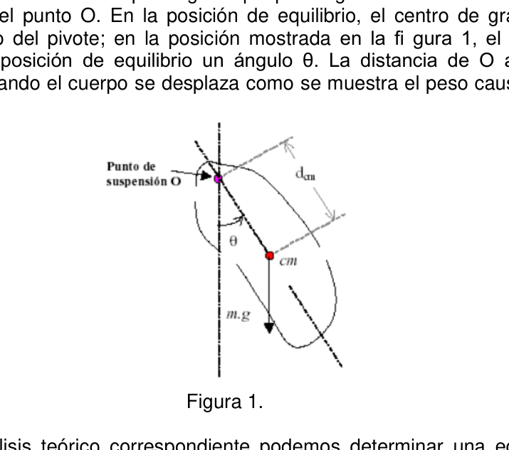
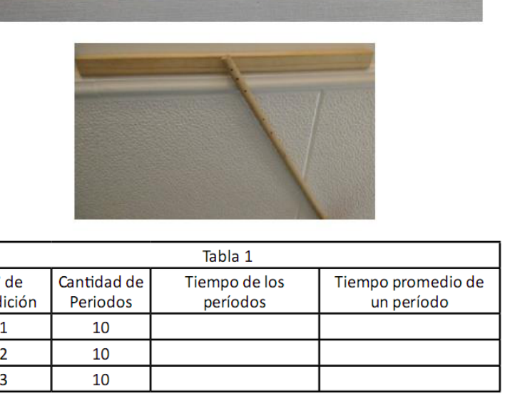

Pendulo fisico
PE28. EPES Nro. 67 Emilio Puchini.
Ciudad de Formosa.
Péndulo Físico.
Un péndulo simple es un modelo idealizado que consiste en una masa puntual
suspendida de un hilo de masa despreciable e inextensible. Si la masa se mueve a un
lado de su posición de equilibrio (vertical), oscilará alrededor de dicha posición, siendo la
fuerza gravitatoria quien actúa como fuerza de restitución y la tensión que provoca que la
masa puntual describa una trayectoria con forma de arco.
Un modelo más complejo pero al mismo tiempo más fiel a la realidad es el péndulo físico,
el mismo consiste en un péndulo real que usa un cuerpo de tamaño finito, en contraste
con el modelo idealizado de péndulo simple en el que toda la masa se concentra en un
punto. Si las oscilaciones son pequeñas, el análisis del movimiento de un péndulo real es
tan sencillo como el de uno simple. Sin embargo para su descripción se debe hacer uso
de otra magnitud, el momento de inercia.
El momento de inercia, representado comúnmente por la letra ―I‖, es una medida de la
inercia rotacional de un cuerpo. Cuando un cuerpo gira en torno a uno de los ejes
principales de inercia, la inercia rotacional puede ser representada con dicha magnitud
escalar. El momento de inercia refleja la distribución de masa de un cuerpo o de un
sistema de partículas en rotación, respecto a un eje de giro, y sólo depende de la
geometría del cuerpo y de la posición del eje; pero no de las fuerzas que intervienen en el
movimiento.
Dado un sistema de partículas y un eje arbitrario, el momento de inercia del mismo se
define como la suma de los productos de las masas de las partículas por el cuadrado de
la distancia r de cada partícula a dicho eje. Matemáticamente se expresa como
Este concepto desempeña en el movimiento de rotación un papel análogo alde masa
inercial en el caso del movimiento rectilíneo y uniforme.
Para nuestra práctica nos valdremos de un método que se basa en la idea del péndulo
físico. La figura 1 muestra un cuerpo irregular que puede girar sin fricción alrededor de un
eje que pasa por el punto O. En la posición de equilibrio, el centro de gravedad está
directamente abajo del pivote; en la posición mostrada en la fi gura 1, el cuerpo esta
desplazado de la posición de equilibrio un ángulo θ. La distancia de O al centro de
gravedad es d. Cuando el cuerpo se desplaza como se muestra el peso causa una torca
de restitución.
Figura 1.
Realizando el análisis teórico correspondiente podemos determinar una ecuación que resulta sumamente útil para la determinación experimental del momento de inercia de un cuerpo.
140 - OAF 2016 Donde T es el periodo del péndulo, I el momento de inercia, m la masa total del cuerpo y g la aceleración de la gravedad.
Parte 1 Objetivo: Determinar el momento de inercia de una varilla delgada.
Materiales: Varilla delgada con 4 agujeros a lo largo de su eje,1 (Ver figura 2) Soporte con pivote,1 (Ver figura 2) Cronómetro ,1 Balanza,1 Cinta métrica o regla, 1
Procedimiento:
- Midan la masa de la varilla utilizando la balanza y anoten el valordebajo de la tabla 1.
- Cuelguen la varilla en el soporte como indica la figura 2.
- Midan la longitud desde el pivote hasta el extremo opuesto de lavarilla y registren el valor debajo de la tabla 1.
- Desplacen la varilla de su posición de equilibrio y manténganla ahí.
- Mientras uno de los integrantes suelta la varilla el otro debe iniciar elcronómetro.
- Registren el tiempo de 10 períodos y anoten el valor obtenido en latabla 1.
- Repitan los pasos del 4 al 6, hasta completar la tabla 1.
Actividades La masa de la varilla es de __________ La longitud desde el pivote al extremo de la varilla es de __________ A partir de los datos obtenidos y registrados en la tabla 1 realicen las siguientes actividades.
OAF 2016 - 141
- Calculen el valor promedio del período del péndulo (Tpro),promediando los 3 valores de la última columna de la tabla 1.
- Determinen el momento de inercia de la varilla entregada,basándose en la ecuación del período del péndulo físico expuesta en la introducción. Utilicen el valor de Tpro calculado en el ítem 1 y elvalor de la masa registrado anteriormente. Nota: No olviden colocar las unidades correspondientes al valor del momento de inercia.
Parte 2
Calculo de errores
El proceso de medición es una operación experimental en la cual se asocia a una
magnitud física un valor dimensionado, en relación a la unidad que se ha definido para
medir dicho valor. En todo proceso de medición existen limitaciones dadas por los
instrumentos usados, el método de medición y/o el observador que realiza la medición.
Estas limitaciones generan una diferencia entre el valor real de la magnitud y la cantidad
obtenida al medir. La diferencia se debe a la incerteza o el error en la determinación del
resultado de una medición; es inevitable y propia del acto de medir. Entonces, no hay
mediciones reales con error nulo.
El resultado de cualquier medición se compone del valor medido y del error que indica la
―exactitud‖ con que se conoce dicho valor. De este modo el resultado queda expresado
de la siguiente forma:
Donde, Xm es el valor de la magnitud medida y E el error. Se denomina error de apreciación a la mínima división que se puede resolver con el instrumento de medición. Por ejemplo, si se quiere determinar la longitud de un cuerpo con una regla con una apreciación de 1 cm, no se podrá distinguir si la longitud es 16,5 cm o 16,8 cm porque la regla no es capaz de marcar esta diferencia. El método utilizado, en esta experiencia, para determinar el momento de inercia no consiste en una medición directa, es decir que su valor se obtiene a partir de la medición de otras magnitudes en este caso del periodo y de la masa. Afortunadamente es posible calcular el error del momento de inercia valiéndose de la siguiente expresión:
Siendo: I el momento de inercia calculado en el ítem 2; ET el error de apreciación del cronómetro; Tpro el valor promedio del periodo obtenido enel ítem 1; Em el error de apreciación de la balanza y m la masa de la varilla. 3. Reemplazando los valores en la ecuación anterior determinen el error correspondiente al momento de inercia calculado en el ítem 2, es decir hallen el valor de EI 4. Escriban el valor del momento de inercia de la varilla y su error correspondiente como indica la introducción de cálculo de errores
Otra forma de determinar el momento de inercia de una varilla delgada que gira en torno a un eje que pasa por uno de sus extremos es utilizar la expresión obtenida a través del cálculo, dicha expresión es:
Donde es la masa de la varilla y es la longitud que hay desde el pivote hasta el extremo opuesto. 5. Calculen el valor del momento de inercia utilizando la expresión analítica, llamaremos a este valor Ia 6. Indiquen si el valor de Ia se encuentre dentro del intervalo definidopara Ien el ítem 4
142 - OAF 2016 Parte 3
-
Cuelguen la varilla en el soporte como indica la figura 2.
-
Midan la distancia del agujero al centro de la varilla y registren el valor en la
tabla 2. -
Desplacen la varilla de su posición de equilibrio y manténganla ahí.
-
Mientras uno de los integrantes suelta la varilla el otro debe iniciar el cronómetro.
-
Registren el tiempo de 5 periodos y anoten el valor obtenido en la tabla 2.
-
Repitan los pasos del 2 al 5, para cada uno de los agujeros de la varilla.
-
A partir de los datos obtenidos y registrados en la tabla realicen un gráfico que muestre la variación del período en función de la distancia del eje de giro al centro de masa (centro geométrico) de la varilla.


Topic: Oscillations & Waves Metodi: Experimental Data Analysis, Simple Harmonic Motion Analysis Competenze: Physical Reasoning, Experimental Data Analysis Objects: Pendulum Fonte: Testo (PDF) — p.3
Pendolo fisico
PE28. - Non lo so. 67 Emilio Puchini.
Città di Formosa.
Pendolo fisico. Un semplice pendolo è un modello idealizzato che consiste in una massa puntuale. Sospeso da un filo di massa disprezzabile e inestensibile. Se la massa si muove a un Il lato della sua posizione di equilibrio (verticale) oscilla intorno a tale posizione, essendo la La forza gravitazionale che agisce come forza di restituzione e la tensione che provoca la massa puntuale descrive un percorso in forma di arco. Un modello più complesso ma allo stesso tempo più fedele alla realtà è il pendolo fisico. Il suo è un pendolo reale che usa un corpo di dimensioni finite, in contrasto. con il modello idealizzato di un semplice pendolo in cui tutta la massa si concentra in un punto. Se le oscillazioni sono piccole, l’analisi del movimento di un pendolo reale è semplice come quello di una semplice. Tuttavia, per la descrizione, si deve usare di un’altra magnitudo, il momento di inerzia. Il momento di inerzia, comunemente rappresentato dalla lettera ―I‖, è una misura della inerzia rotazionale di un corpo. Quando un corpo gira attorno a uno degli assi In questo caso, la velocità di inerzia può essere rappresentata con tale magnitudo. Scalare. Il momento di inerzia riflette la distribuzione di massa di un corpo o di un sistema di particelle in rotazione, rispetto ad un asse di rotazione, e dipende solo dalla La geometria del corpo e della posizione dell’asse; ma non delle forze che intervenono nel movimento. Dato un sistema di particelle e un asse arbitrario, il momento di inerzia di esso si definisce la somma dei prodotti delle masse delle particelle per il quadrato di la distanza r di ogni particella a tale asse. Matematicamente si esprime come
Questo concetto svolge un ruolo analogo nel movimento di rotazione alla massa. inerziale nel caso del movimento rettilineo e uniforme. Per la nostra pratica si userà un metodo basato sull’idea del pendolo.
- Fisica. La figura 1 mostra un corpo irregolare che può girare senza attrito intorno a un L’asse che passa attraverso il punto O. Nella posizione di equilibrio, il centro di gravità è direttamente sotto il pivot; nella posizione mostrata in figura 1, il corpo è spostato dalla posizione di equilibrio un angolo θ. Distanza da O al centro di gravità è d. Quando il corpo si muove come mostra il peso provoca un torco di restituzione.
Figura 1.
Con l’analisi teorica corrispondente possiamo determinare un’equazione che La velocità di inerzia di un sistema di velocità di inerzia è molto utile per la determinazione sperimentale del momento di inerzia di un sistema di velocità di inerzia. corpo.
140 - OAF 2016 Dove T è il periodo del pendolo, I il momento di inerzia, m la massa totale del corpo e g l’accelerazione della gravità.
Parte 1 Obiettivo: Determinare il momento di inerzia di un bastone sottile.
Materiali: Sottile bastone con 4 buche lungo l’asse,1 (Vedere figura 2) Supporto con pivot,1 (Vedi figura 2) Cronometro ,1 Sbalzo,1 Cintura metrica o regola, 1
Procedura:
- Misurare la massa della canna utilizzando la bilancia e annotare il sottovalore della tabella 1.
- Appendi il bastone sul supporto come indicato nella figura 2.
- Misurare la lunghezza dal pivot all’estremità opposta del lavandino e registrare il valore sotto la tabella 1.
- Svolgiate il bastone dalla posizione di equilibrio e mantendolo lì.
- Mentre uno dei membri rilascia il bastone, l’altro deve avviare il cronometro.
- Raccordate il tempo di 10 periodi e annotate il valore ottenuto in tabella 1.
- Ripetete i passaggi da 4 a 6, fino a completare la tabella 1.
Attività La massa del bastone è di __________ La lunghezza dal pivot all’estremità del bastone è di __________ Sulla base dei dati ottenuti e registrati in tabella 1 effettuano i seguenti attività.
OAF 2016 - 141
- Calcolare il valore medio del periodo di pendolo (Tpro), con una media di 3 Valori dell’ultima colonna della tabella 1.
- Determina il momento di inerzia della barra consegnata, basandosi sulla l’equazione del periodo del pendolo fisico esposta all’introduzione. Utilizzare Il valore di Tpro calcolato al punto 1 e il valore della massa registrato sopra. Nota: non dimenticate di inserire le unità corrispondenti al valore del momento di inerzia.
Parte 2 Calcolo degli errori Il processo di misurazione è un’operazione sperimentale in cui viene associata una Magnitude fisica un valore dimensionato, in relazione all’unità che è stata definita per misurare tale valore. In ogni processo di misurazione ci sono limitazioni date dai gli strumenti utilizzati, il metodo di misurazione e/o l’osservatore che effettua la misurazione. Queste limitazioni generano una differenza tra il valore reale della grandezza e la quantità. ottenuto con la misurazione. La differenza è dovuta all’incertezza o all’errore nel determinare il Il risultato di una misurazione è inevitabile e proprio dell’atto di misurazione. Allora, non c’è misurazioni reali con errore zero. Il risultato di qualsiasi misurazione è composto dal valore misurato e dall’errore che indica la “precisione” per il quale si conosce tale valore. In questo modo il risultato viene espresso. di:
Dove Xm è il valore della grandezza misurata e E l’errore. L’errore di valutazione è definito il minimo di divisione che può essere risolto con il strumento di misurazione. Per esempio, se si vuole determinare la lunghezza di un corpo con una regola con un’apprezzamento di 1 cm, non si può distinguere se la lunghezza è 16,5 cm o 16,8 cm perché la regola non è in grado di fare questa differenza. Il metodo utilizzato in questa esperienza per determinare il momento di inerzia non è La misurazione è diretta, cioè il suo valore viene ottenuto dalla misurazione di altre dimensioni in questo caso del periodo e della massa. Fortunatamente è possibile. Calcolare l’errore del momento di inerzia utilizzando la seguente espressione:
Essendo: I il momento di inerzia calcolato in item 2; ET l’errore di valutazione del Tpro il valore medio del periodo ottenuto in item 1;
- il peso della palla e la massa della canna.
- Sostituendo i valori dell’equazione precedente determinano l’errore corrispondente al momento di inerzia calcolato nell’articolo 2, cioè il Valore dell’II
- Scrivi il valore del momento di inerzia della bacchetta e il suo errore corrispondente come indicato dall’introduzione di errori
Un altro modo per determinare il momento di inerzia di un sottile bastone che gira intorno Un’asse che attraversa uno dei suoi estremi è utilizzare l’espressione ottenuta attraverso il Calcolo, tale espressione è:
Dove è la massa del bastone e la lunghezza che c’è dal pivot all’estremità Opposto. 5. Calcolare il valore del momento di inerzia utilizzando l’espressione analitica, Questo valore è chiamato Ia. 6. Indicare se il valore di Ia è all’interno dell’intervallo definito per i Articolo 4
142 - OAF 2016 Parte 3
-
Appendi il bastone sul supporto come indicato nella figura 2.
-
Misurare la distanza dal buco al centro della bacchetta e registrare il valore in tabella 2.
-
Svolgiate il bastone dalla posizione di equilibrio e mantendolo lì.
-
Mentre uno dei membri rilascia il bastone, l’altro deve avviare il cronometro.
-
Raccordate il tempo di 5 periodi e annotate il valore ottenuto in tabella 2.
-
Ripetete i passaggi da 2 a 5 per ogni buco della canna.
-
Sulla base dei dati ottenuti e registrati nella tabella realizzano un grafico che mostra la variazione del periodo in funzione della distanza dell’asse di rotazione da centro di massa (centro geometrico) della bacchetta.
Topic: Oscillations & Waves Metodi: Experimental Data Analysis, Simple Harmonic Motion Analysis Competenze: Physical Reasoning, Experimental Data Analysis Objects: Pendulum Fonte: Testo (PDF) — p.3
The following table shows the results of the calculation of the weighted average weight of the vehicle:
PE28. The Commission shall adopt implementing acts in accordance with Article 21 of this Regulation. 67 Emilio Puchini. He was a man.
The city of Formosa.
It’s a physical pendulum. A simple pendulum is an idealized model consisting of a point mass. suspended from a despicable and unextended thread of mass. If the mass moves to a The angle of the horizontal plane is the angle of the horizontal plane. Gravitational force acting as a force of restitution and the stress that causes the force to be point mass describes a path in the shape of an arc. A more complex but at the same time more realistic model is the physical pendulum. It consists of a real pendulum that uses a finite-sized body, in contrast. with the idealized simple pendulum model where all the mass is concentrated in a I’m not going to lie. If the oscillations are small, the analysis of the motion of a real pendulum is It’s as simple as a simple one. However, for its description it must be used of another magnitude, the moment of inertia. The moment of inertia, commonly represented by the letter ―I‖, is a measure of the rotational inertia of a body. When a body rotates around one of the axes In the case of a major inertial current, the rotational inertial current can be represented by this magnitude. climb up. The moment of inertia reflects the mass distribution of a body or a body. The rotating particle system, with respect to a rotating axis, and depends only on the The geometry of the body and the axis position; but not the forces involved in the The movement. Given a system of particles and an arbitrary axis, the moment of inertia of the same is It is defined as the sum of the products of the masses of the particles by the square of the distance r of each particle to that axis. Mathematically it is expressed as
This concept plays a similar role in rotational motion as mass. Inertial in the case of straight and uniform movement. For our practice we will use a method based on the idea of the pendulum. I’m a physicist. Figure 1 shows an irregular body that can rotate without friction around a axis passing through point O. In the equilibrium position, the center of gravity is directly below the pivot; in the position shown in Figure 1, the body is displaced from the equilibrium position an angle θ. The distance from O to the centre of gravity is d. When the body moves as shown the weight causes a twitch The Commission shall take the necessary measures to ensure that the measures are implemented.
Figure 1 is shown.
By performing the corresponding theoretical analysis we can determine an equation which It is extremely useful for experimental determination of the moment of inertia of a body.
The Commission shall adopt delegated acts in accordance with Article 21 of this Regulation. Where T is the period of the pendulum, I is the moment of inertia, m is the total mass of the body and g the acceleration of gravity.
Part 1 The objective: Determine the moment of inertia of a thin rod.
Materials: Thin rod with 4 holes along its axis,1 (see figure 2) Pivot support,1 (see figure 2) Timekeeper , 1 Balance, 1 Metric or rule tape, 1
The procedure:
- They measure the mass of the rod using the scale and note the undervalued value of the rod. the following table is added:
- Hang the rod on the support as shown in Figure 2.
- They measure the length from the pivot to the opposite end of the washer and record the value below Table 1.
- Move the rod from its equilibrium position and hold it there.
- While one member releases the rod, the other must start the chronometer.
- Record the time of 10 periods and write down the value obtained in Table 1.
- Repeat steps 4 to 6 until complete table 1.
Activities The mass of the rod is __________ The length from the pivot to the end of the rod is __________ Based on the data obtained and recorded in Table 1 they perform the following activities.
The Commission shall adopt delegated acts in accordance with Article 21 of this Regulation.
- Calculate the average value of the pendulum period (Tpro), averaging the 3 values in the last column of table 1.
- Determine the moment of inertia of the delivered rod, based on the The equation of the period of the physical pendulum set out in the introduction. Use the the Tpro value calculated in item 1 and the mass value recorded above. Note: Do not forget to place the units corresponding to the value of the moment of The power is inert.
Part 2 Error calculation The measurement process is an experimental operation in which a physical magnitude a dimensioned value, relative to the unit defined for measuring that value. In all measurement processes there are limitations given by the instruments used, the measuring method and/or the observer performing the measurement. These limitations generate a difference between the actual value of magnitude and quantity. obtained by measuring. The difference is due to uncertainty or error in determining the The result of a measurement is inevitable and inherent in the act of measurement. So, there’s no The measurements are real with zero error. The result of any measurement is the measured value and the error indicating the “accuracy” of the value. The result is thus expressed as follows:
Where, Xm is the value of the measured magnitude and E is the error. The minimum division that can be solved with the measuring instrument. For example, if you want to determine the length of a body with a rule with a 1 cm estimate, it cannot be distinguished if the length is 16,5 cm or 16.8 cm because the rule is not able to make this difference. The method used in this experiment to determine the moment of inertia is not It consists of a direct measurement, i.e. its value is obtained from the measurement of other magnitude in this case of period and mass. Fortunately it is possible. calculate the moment of inertia error using the following expression:
Being: I the moment of inertia calculated in item 2; ET the error of estimation of the The average value of the period obtained in item 1; in the error of The weight of the scale and m the mass of the rod. 3. By replacing the values in the above equation, they determine the error. corresponding to the moment of inertia calculated in item 2, i.e. find the value of EI 4. Write down the value of the rod moment of inertia and its corresponding error. as indicated in the error calculation introduction
Another way to determine the moment of inertia of a thin rod that rotates around to an axis passing through one of its ends is to use the expression obtained through the calculation, that expression is:
Where is the mass of the rod and is the length from the pivot to the end The opposite. 5. Calculate the value of the moment of inertia using the analytical expression, We shall call this value Ia 6. Indicate whether the value of Ia is within the defined range for the Article 4
The Commission shall adopt delegated acts in accordance with Article 14 of this Regulation. Part 3
-
Hang the rod on the support as shown in Figure 2.
-
They measure the hole distance to the center of the rod and record the value in the the following table is added:
-
Move the rod from its equilibrium position and hold it there.
-
While one member releases the rod, the other must start the timer.
-
Record the time of 5 periods and write down the value obtained in Table 2.
-
Repeat steps 2 to 5 for each hole in the rod.
-
From the data obtained and recorded in the table they make a graph that Show the period change depending on the distance of the axis of rotation to the centre of mass (geometric centre) of the rod.
Topic: Oscillations & Waves Metodi: Experimental Data Analysis, Simple Harmonic Motion Analysis Competenze: Physical Reasoning, Experimental Data Analysis Objects: Pendulum Fonte: Testo (PDF) — p.3